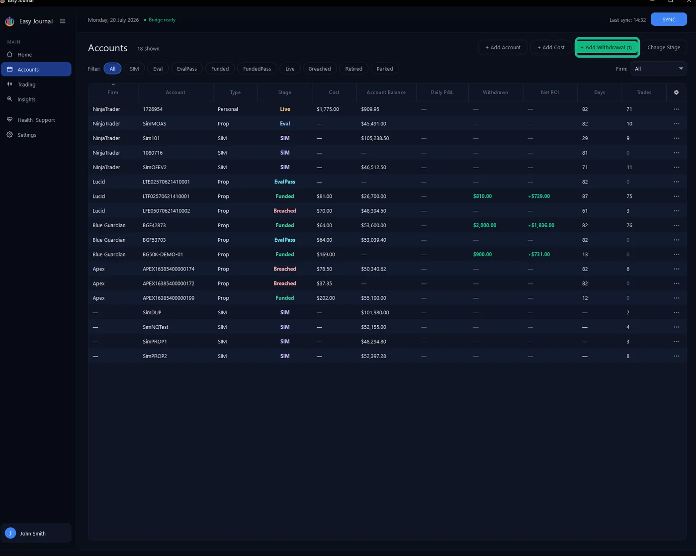
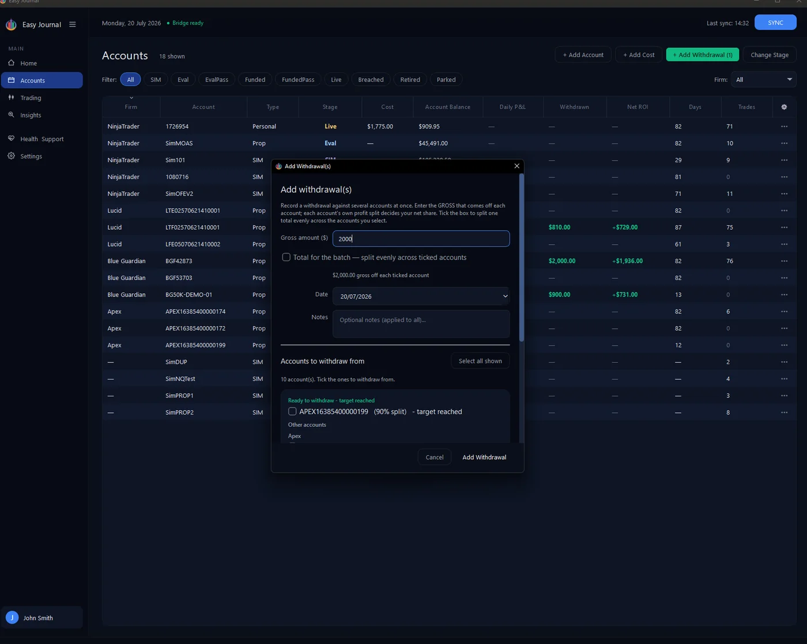
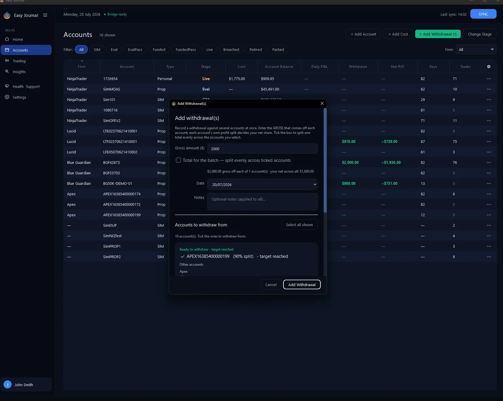
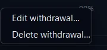
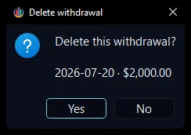

The Journal tells you when a payout is ready When a funded account's balance clears its buffer zone and withdrawal target, the + Add Withdrawal button turns green with a count of the accounts ready. Our account APEX16385400000199 sits at $55,100 against a $52,600 buffer - $2,500 withdrawable - and the button lit up:

1. Click + Add Withdrawal. 2. Enter the gross amount - the figure the firm shows for the payout, before your split. We entered $2,000. Accounts that have reached their target are grouped at the top under Ready to withdraw - target reached, each showing its split:

3. Set the date, add a note if you want one, and tick the account(s) the money came from.

4. Click Add Withdrawal. The result, live in the Accounts list - $1,800.00 withdrawn (your 90% share of the $2,000) lands on the account, Net ROI jumps to +$1,598, and the button returns to normal:



Why hasn't the balance dropped? Withdrawn and Net ROI update the moment you save. The Account Balance column deliberately does not - it always mirrors NinjaTrader's latest reported balance. The firm deducts the payout on its side, so the next snapshot after they process it already carries the lower balance; the Journal never subtracts it a second time. Expect the balance to update on the next sync - that short lag is normal, and it keeps the Accounts view and the Trading view in perfect agreement. Tip: Same payout spread across several accounts? Tick Total for the batch and the gross splits evenly across the ticked accounts instead of applying to each.
Made a mistake? Recorded the wrong payout, or logged it against the wrong account? Open the account from the Accounts list (••• → View details), switch to the Journal tab, and find the payout in the Withdrawals ledger. Right-click the row:
Right-click a withdrawal row for Edit withdrawal… and Delete withdrawal…
Edit withdrawal… reopens the entry — gross amount, split, date and note — so you can correct it. Delete withdrawal… asks you to confirm first; the payout stays until you click Yes:

